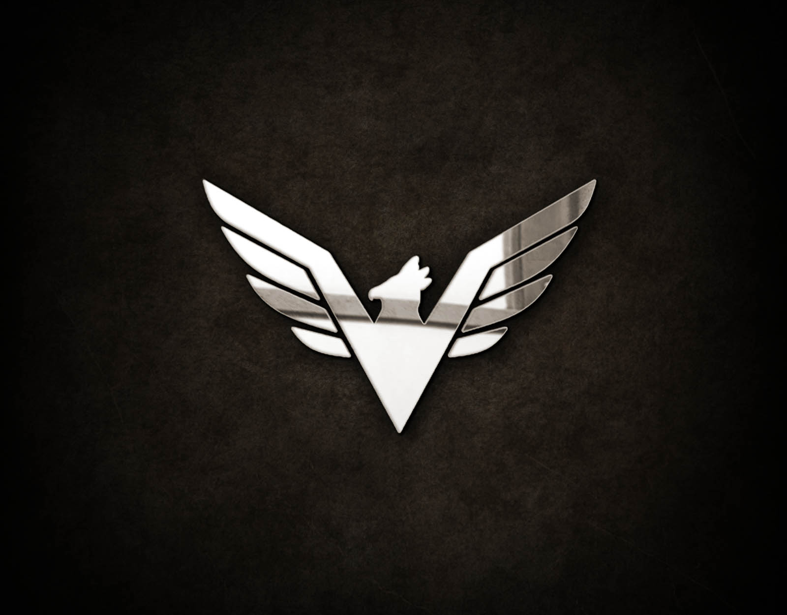
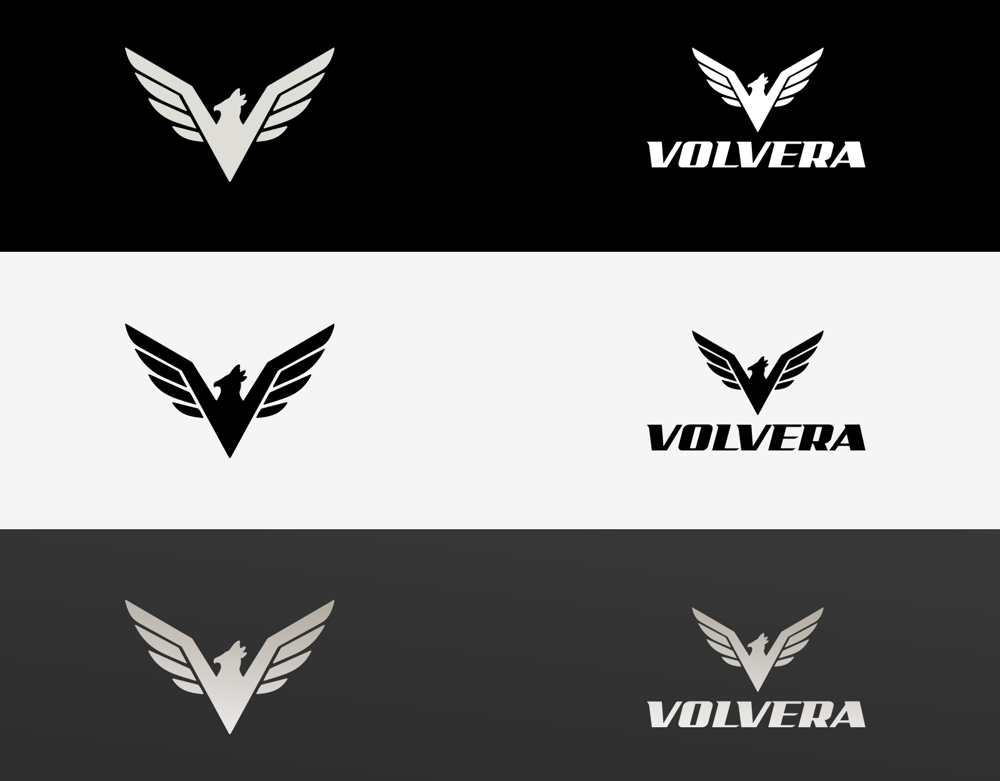
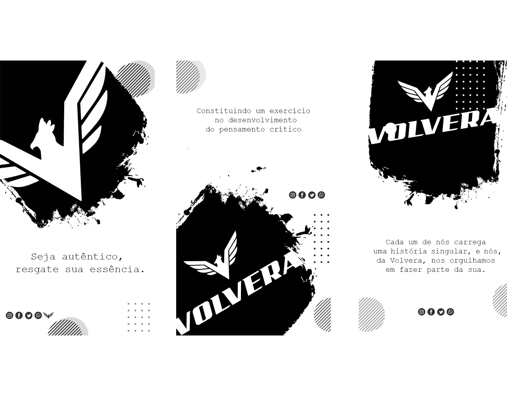
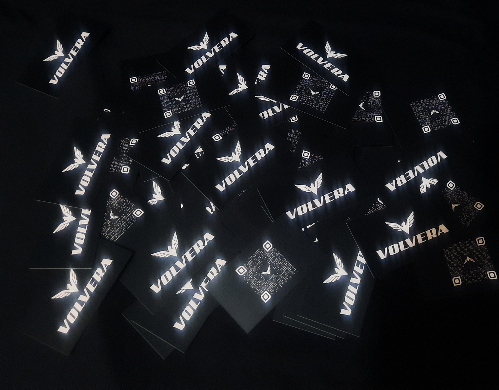

Volvera
Identidade visual - Webdoc
O projeto Volvera foi meticulosamente pensado e criado, do iniciao até a conclusão, englobando a criação da história, do roteiro e a transformação em uma web documentário, tudo com o propósito de integrar um produto de valor singular à sua marca. A logo, inspirada no imponente Gavião-Real Harpia, uma águia nativa do Brasil e uma das maiores e mais poderosas do mundo, foi desenhada com as asas abertas para destacar sua envergadura, enquanto o distintivo topete, característico da harpia, foi habilmente representado. A escolha de cores neutras foi estrategicamente pensada para transmitir sofisticação por meio do minimalismo.
Na subsequente etapa do projeto, foi elaborado um modelo de post para as redes sociais, especialmente adaptado aos stories do Instagram, mantendo uma meticulosa aderência à identidade visual da marca. Simultaneamente, uma introdução em vídeo foi criada, servindo como uma atraente chamada para o site.
O cartão de visitas foi concebido com uma estratégia singular, apresentando exclusivamente a logo na parte da frente e, no verso, um QR code. Essa abordagem visa despertar curiosidade e mistério, uma vez que o conteúdo vinculado ao QR code pode ser modificado, conferindo dinamismo e surpresa, enquanto mantém o mesmo código. No final foi criado um blog, para conceber informação de forma funcional para captar audiência em nossa newsletter e em vídeos para o YouTube.
Ferramentas e Tecnologias
Adobe Photoshop, Adobe Premiere, Adobe AfterEfect.
- 
- 
- 
- 